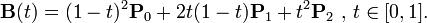
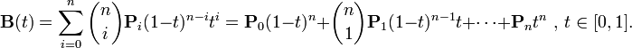
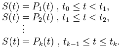

Las curvas cuadráticas, o curvas de Bézier de segundo grado, son aquellas curvas definidas mediante tres puntos: un punto de contexto (punto inicial), un punto de control y un punto final. El punto de control define la curvatura de la curva cuadrática creando dos líneas imaginarias que son tangentes a la curva y que están conectadas al punto de control uniendo al punto de contexto y al punto final. Moviendo el punto de control más lejos de los puntos inicial y final se crean curvas más pronunciadas y, moviéndolo más cerca, la curva será más amplia. Matemáticamente podemos expresarlas como aquel polinomio de segundo grado, continuo entre 0 y 1 que satisface la ecuación:
Puede experimentar de manera interactiva moviendo los tres puntos que aparecen en el canvas, en verde hemos representado al punto de control, y en negro los otros dos puntos.
La curvas cúbicas de Bézier o simplemente curvas de Bézier, son aquellas curvas definidas por un punto de contexto, dos puntos de control y un punto final. A diferencia de las curvas cuadráticas, estas curvas cúbicas están definidas por dos puntos de control en vez de uno, y gracias a eso podemos crear curvaturas más complejas. La primera parte de la curva es tangencial a la línea imaginaria existente entre el punto de contexto, o inicial y el primer punto de control. La segunda parte de la curva por su lado es tangencial al segundo punto de control y el punto final. Al igual que en el caso de las curvas cuadráticas, la curva no tiene por qué pasar por los puntos de control, ya que estos, simplemente proporcionan información direccional. Matemáticamente una curva de Bézier puede expresarse como un polinomio de tercer grado continuo entre 0 y 1 que satisface la siguiente ecuación:
Puede experimentar de manera interactiva moviendo los cuatro puntos que aparecen en el canvas, en verde hemos representado los puntos de control, y en negro los otros dos puntos.
Si contamos con un número determinado de puntos de control y de ruta, podemos crear una función interpoladora compuesta por curvas cuadráticas y cúbicas. Esta función sin embargo, será muy limitada, ya que, al contrario de lo que veremos más adelante con los splines, su derivada no tiene que ser continua, y por lo tanto, la función original, no resulta suave, es decir, se observan picos en su representación. Puede experimentar con la composición de curvas, tanto cuadráticas como cúbicas, y en cualquier momento puede limpiar el canvas y una vez dibujada la curva puede volver al modo de edición, para así seguir extendiéndola. Recuerde que si está usando curvas cuadráticas, necesita alternar puntos de control y puntos de ruta, mientras que en el caso de utilizar curvas cúbicas deberá intercalar 2 puntos de control entre cada pareja de puntos de ruta. En el modo edición puede observar cómo conseguir mayor o menor suavidad en la curva, que será lo que buscaremos con los splines.
Un camino es aquella curva que une dos puntos aproximándose a diferentes puntos de control que le sirven como puntos de gravedad. No es exactamente una curva que sirva como interpolante propiamente dicha como un spline, ya que no pasa por los puntos de ruta, pero sin embargo, para conseguir curvas suaves que se aproximan a puntos resulta muy interesante. Internamente está compuesta por diversas curvas cuadráticas cuyos extremos han sido calculados a partir de los puntos introducidos, de modo que los puntos "finales" de cada curva cuadrática son calculados como el punto intermedio entre los puntos introducidos, y estos son usados como puntos de control. Puede experimentar con la construcción en tiempo real y la edición de la curva. En este caso los extremos son los puntos de ruta reales y el resto son los puntos de control de la curva.
Los splines son quizás las curvas más interesantes que vamos a tratar. Como hemos visto en la sección de curvas compuestas, el principal problema a lo hora de unirlas es que el punto en el cual las dos curvas simples usadas para componer la mayor, se unen, con frecuencia no es suave. Esto ocurre porque las dos curvas, a pesar de compartir un punto extremo, están influenciadas por puntos de control que no tienen relación entre sí. Ya sabemos que un spline debe ser suave, esto implica que su derivada sea continua en todo su dominio, y que además sea una curva interpolante, es decir, que pase por todos los puntos de ruta que se introduzcan. Los splines son curvas muy interesantes en gráficos por ordenador ya que son simples de construir, sencillos y precisos a la hora de evaluar y son capaces de aproximar formas complejas de un modo muy sencillo. Nosotros hemos implementado dos tipos de splines, el cuadrático, y el cúbico o Bézier. Matemáticamente un spline se define como:
Donde S(t) se define como una función continua para todos los valores de t en un intervalo y que además es derivable y su derivada es continua para todo valor de t en ese mismo intervalo.
Puede experimentar con los dos tipos de splines. Es importante notar que al alterar la posición de los diversos puntos, podemos dejar de tener un spline, ya que podemos obtener una función por partes con una derivada no continua.